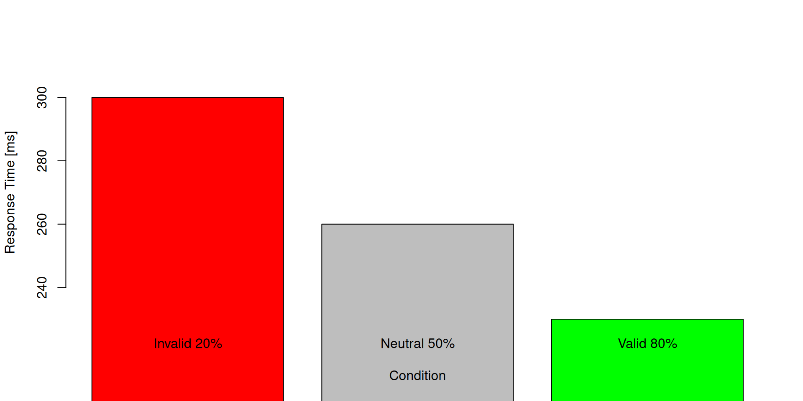

Foundations of attention
Dr Germano Gallicchio
Lecturer in Psychophysiology and Cognitive Neuroscience
School of Psychology and Sport Science, Bangor University, UK
profile | research | software | learning resources | book meeting
On a computer press F11 to de/activate full-screen view.
For smartphone and review: Bottom left menu → Tools → PDF Export Mode.
QR code to
these slides:
PIN
0000
Agenda
Definition of attention
Visuospatial attention and its typologies
Spatial cueing effects
Attention and deception in sports
What is attention?
 William James
William James
Everyone knows what attention is. It is the taking possession by the mind, in clear and vivid form, of one out of what seem several simultaneously possible objects or trains of thought. Focalization, concentration of consciousness are of its essence. It implies withdrawal from some things in order to deal effectively with others, and is a condition which has a real opposite in the confused, dazed, scatterbrain state.
point 1: We can choose the focus of attention. Attention can be voluntary.
point 2: Inability to attend to many things at once
point 3: Limited capacity to process information. Attention is a selective process
Attention is a selective process
These videos are meant to demonstrate we don’t notice obvious changes when we don’t pay attention to them.
Visuospatial attention
There are several theoretical models of visuospatial attention (but we will not go through each of them)
It is useful to think of attention as a spotlight moving in space

Orienting
Selecting a certain location or object in space, so that processing of those stimuli is facilitated.
Events occurring in that location (vs those occuring in another location):
- are processed more quickly
- produce greater neural activity in related regions
- are detected at lower thresholds
Orienting of visuospatial attention = aligning of attention with a source of sensory input or with an internal representation (memory)
Demonstration of a type of orienting
Keep your gaze on the center while reading the letters appearing on screen.
+ C O V E R T
Orienting of visuo-spatial attention
Important distinction in the manner visuospatial attention can be oriented.
covert orienting: attention is directed in space independently of the sensorial organs (e.g., direction of eyes or head)
overt orienting: Directing the sensorial organs towards the region of space of interest.
Covert or overt? Examples.
Overt orienting
- Turning your head or body toward a sound to better hear or identify it. Example: You hear footsteps and turn your head to locate the source.
- Focusing attention on a particular sound or voice without moving your head or body. Example: You listen for a specific person’s voice in a crowded room while remaining still.
- Tracking the location of people or objects based on auditory cues, without physically orienting toward them.
- You think about or track what someone is doing, even though you are looking somewhere else.
- You notice something happening at the edge of your perceptual field while not redirecting your senses towards it.
- You pay attention to something without moving your head or eyes.
Example: You listen to a conversation behind you but keep facing forward.
Spatial cueing task
Introductory video (scene from the movie “Back to the Future”)
Spatial Cueing Task
 Michael Posner
Michael Posner
The spatial cueing task is a experiment used to study how attention is directed in space. It helps us understand how cues can guide our focus, even without moving our eyes or head. How does the task work?
- You fix your gaze on a central point.
- A cue appears, indicating where a target might show up.
- After a brief delay, the target appears either at the cued location or elsewhere.
- You respond as quickly as possible when you detect the target.
There is a catch: the cue does not always tell the truth.
Types of cues
Valid cue
- The cue correctly indicates where the target will appear.
- Example: A sound or light flashes on the left, and the target appears on the left.
- People respond faster to valid cues.
Invalid cue
- The cue points to the wrong location.
- Example: A cue flashes on the right, but the target appears on the left.
- Responses are slower because attention was misdirected.
Neutral cue
- The cue does not give information about the target’s location.
- Example: A cue appears in the center or points in both directions.
- Response times are intermediate.
Examples of possible non-visual adaptations
Auditory version
Cue: a brief tone presented to either the left, right, of both ears
Target: another brief tone presented to either left or right ear
Task: Press a button as quickly as possible when you hear the target
Tactile version
Cue: a brief vibration presented to either the left, right, or both hands
Target: another brief vibration presented to either the left or right hand
Task: respond with your voice as soon quickly as possible when you feel the vibration
Demonstration of visuo-spatial cueing
Valid cue The cue is an arrow pointing to the left. A short while after, the target appears also on the left. In this trial, the cue was valid.
+
+
+
Why this task is important in sport and exercise psychology
- It demonstrates how the focus of attention can be guided by cues (instructions), even without moving our senses (is this covert or overt orienting?).
- This helps us understand selective attention in everyday life and sports.
- It reveals that attention improves processing at the cued location and slows it elsewhere.
- It shows the cost of attending to the wrong location and the benefit of attending to the right location
Types of orienting: endogenous vs. exogenous
Exogenous orienting: Associated with signals that capture attention automatically and involuntarily (like a sudden flash or sound). It is fast and reflexive.
Endogenous orienting: Associated with symbolic signals (like an arrow or instruction) that provide information about a location. Attention is then oriented voluntarily (intentionally).
In other words, there are two ways that attention can be shifted:
Endogenous shift = “from inside”, goal-directed, top-down (you control it)
Exogenous shift = “from outside”, stimulus driven, bottom-up (the environment controls it). Sometimes associated with a distracting stimulus.
Examples of exogenous and endogenous cues for the visual and auditory modalities
| Exogenous cue | Endogenous cue | |
|---|---|---|
| Visual modality | a flash in a location | an arrow pointing at a location |
| Auditory modality | a tone in a location | a tone pointing at a direction (e.g., a voice saying “right”) |
Demonstration of visuo-spatial cueing (exogenous)
The previous demonstration included only endogenous cues was
Valid cue The cue is a flash on the left. A short while after, the target appears also on the left. In this trial, the cue was valid.
+
+
+
Posner studies (ca. 1970-80s)
Michael Posner used a spatial cueing task to investigate how attention is directed in space. Participants were asked to fixate on a central point while cues indicated where a target might appear.
The cues could be valid, invalid, or neutral. After a brief delay, the target appeared, and participants responded as quickly as possible. The study measured response times to the onset of the target.
The classic Posner study focused on endogenous (central, symbolic) cues such as arrows presented at the center. Exogenous cues (such as peripheral flashes) were introduced in later studies.
Participants were required to keep their eyes on the fixation cross the whole time.
The classic design typically used 80% valid, 20% invalid, and 50% neutral trials as a separate baseline.
Note
The percentages refer to the distribution of trial types within the experiment, not to a single set of trials. Typically, the experiment is structured so that, for example, 80% of the cued trials are valid and 20% are invalid, while neutral trials are presented as a separate baseline (often making up 50% of the total trials, or sometimes 1/3 if all three types are equally represented). The numbers in the example above are illustrative and not meant to sum to 100% in a single block—they describe the proportions within each trial type.
| trial type | function |
|---|---|
| neutral | serve as a control condition for the other two |
| valid | study the benefits of attending to the correct location |
| invalid | study the costs of attending to the wrong location |
Questions:
Why did Posner decide to make the cue 80% of the times valid? Why not 100%?
If it were 100%, then the cue would never be invalid, and Posner could not study the cost of attending to an incorrect location
Why then 80-20% and not 50-50%?
To build trustworthiness in the cue: the participant oriented their attention to the cued direction because most of the times the cue pointed in the correct direction. If the participant learned over time that the cue was uninformative, they would stop using
Were participants supposed to orient their attention overtly or covertly?
Covertly. In fact, they were required to keep their eyes on the central fixation cross.
Posner task: basic results
Key result:
- Response times were slowest for invalid trials (i.e., target preceded by an invalid cue), faster for neutral trials (i.e., target preceded by a neutral, uninformative cue), and fastest for valid trials (i.e., target preceded by a valid cue)
Key interpretation:
Valid cue pre-activates a an attentional path which is the same as that activated by the target
Invalid cue pre-activates a an attentional path which is different from that activated by the target
We just scratched the surfaced of the spatial cueing literature
Most later studies are more complex than this.
One (of many) idea: a valid cue does not always cause facilitation…
How can it be? Any ideas?
If the cue is exogenous and the cue-target delay is longer than expected, the target is detected more slowly
This phenomenon is known as inhibition of return (however, this is not topic for this module)
Optional: Demo of spatial cueing task
Try the task yourself at: link to Psytoolkit demo
Seminar: Sebanz and Shiffrar (2009)
Make sure to read the paper
General introduction
Overarching aim: determine whether expert basketball players are better than novices in distinguishing true from fake passes
_(cropped).jpg)
Method | Study 1
Participants
- 12 experts
- 18 novices
Task
- Watch videos/photos and classify as true pass or fake pass
- 30 movies (true passes)
- 30 movies (false passes)
- 30 pictures (true passes)
- 30 pictures (false passes)
Main measure
- percentage of accurate classifications
Results | Study 1
Both experts and novices performed above chance level, for both movies and pictures: they could distinguish fakes from passes
Experts outperformed novices (i.e., they gave more correct responses) when movies were presented
Method | Study 2
Participants
- 12 experts
- 18 novices
Task
- Watch videos with kinematic cues only (light points) and classify as true pass or fake pass
- 12 front view (true passes)
- 12 front view (false passes)
- 12 half-profile view (true passes)
- 12 half-profile view (false passes)
Main measure
- percentage of accurate classifications
Results | Study 2
Novices performed at the chance level
Experts performed above chance: they could distinguish fakes from passes
Experts performed better when watching from the front than from half-profile
General discussion
Interpretation:
visual expertise
motor expertise
How would you follow-up this study?
example: track gaze position to identify which information experts and novices use
Social spatial cueing
Directional changes in posture (e.g., eye movements) of a person can influence somebody else’s direction of attetnion.
Sport fakes?